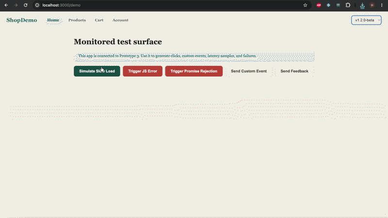
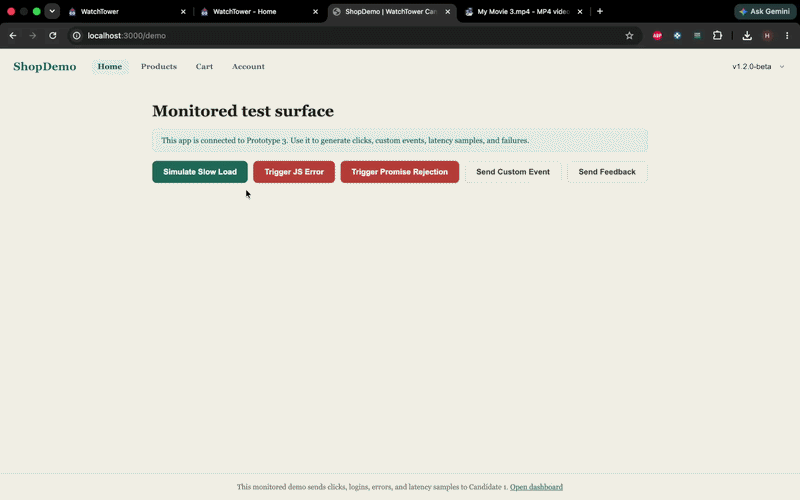
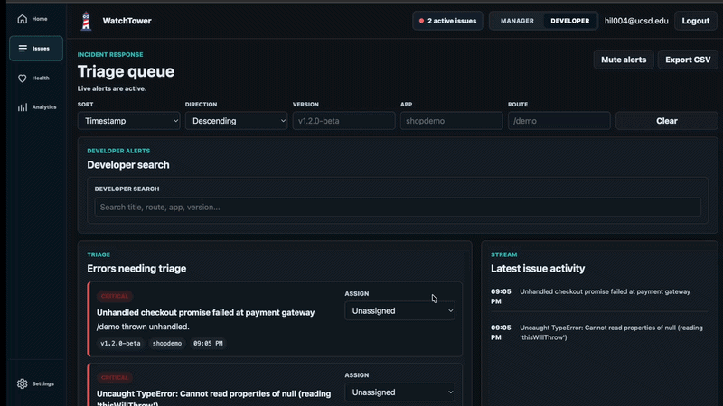
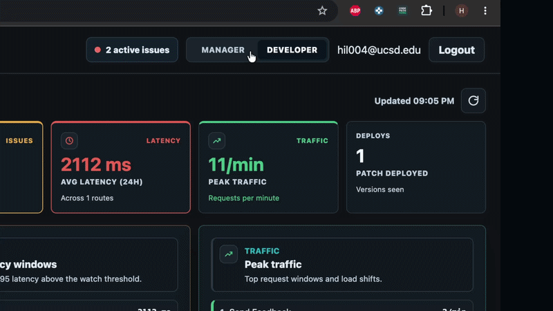
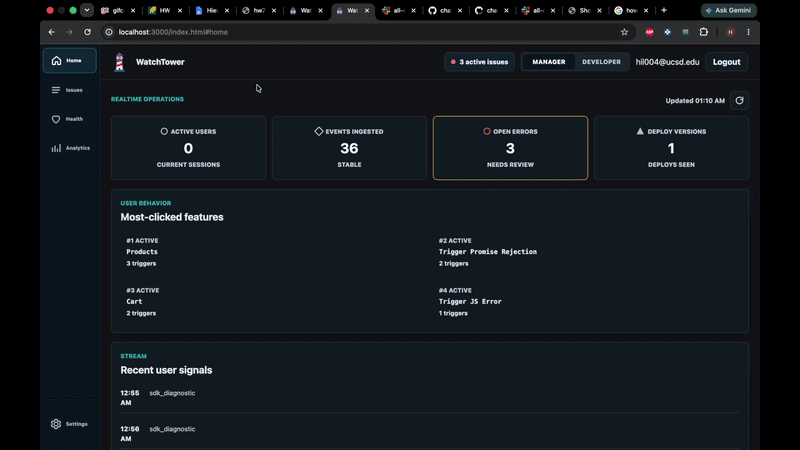

WatchTower
Let the Data Come to You
Track errors, speed, and user feedback-connected to every release, in one simple dashboard.
Workflow
From signal to action.
Move through the WatchTower workflow one clear step at a time.



Capabilities
One workspace. Four signals that matter.
WatchTower keeps the essential production story readable, so teams can investigate without juggling separate tools.
-
Error Tracking
See aggregated exceptions with stack traces and frequency. Spot top offenders and confirm fixes with trend charts.
-
Performance Monitoring
Track page loads, API latency, and slow resources. Identify regressions and measure impact by release.
-
User Feedback Capture
Collect lightweight user reports tied to sessions and events. Cut guesswork with context-rich submissions.
-
Deploy Correlation
Map errors and performance shifts to specific releases. Know when a deploy caused a spike and roll back with confidence.
Built for every perspective
A clearer handoff between the people shipping the product.


Meet the WatchTower team
Frontend
- Hemendra
- Alex
- Josh
- James
- Hieu
- Fahad
Backend
- Daniel
- Aditya
- Waleed
- Woosik
- Jason